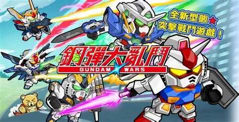
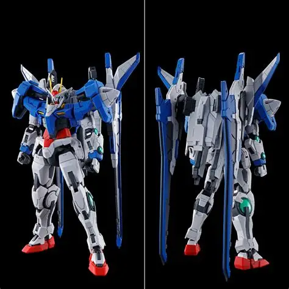

Japanilainen lelu- ja peliyritys
Bandai on japanilainen yritys, joka on erikoistunut lelujen, pelien ja viihteen tuotantoon. Yritys on perustettu vuonna 1950 ja se on kasvanut yhdeksi maailman suurimmista lelu- ja peliyrityksistä. Bandai tunnetaan erityisesti suosituista anime- ja manga-sarjoistaan, kuten Dragon Ball, One Piece ja Gundam, joiden tuotteita se valmistaa ja markkinoi ympäri maailmaa. Bandain tuotevalikoimaan kuuluu laaja valikoima leluja, figuureja, pelejä ja muita viihdetuotteita, jotka ovat suosittuja kaikenikäisten fanien keskuudessa.
Bandain menestys perustuu sen kykyyn luoda ja markkinoida suosittuja tuotteita, jotka perustuvat sen suosittuihin anime- ja manga-sarjoihin. Yritys on saavuttanut suuren suosion fanien keskuudessa, ja sen tuotteet ovat saatavilla monissa maissa ympäri maailmaa. Bandain tuotevalikoima on laaja ja monipuolinen, ja se tarjoaa jotain jokaiselle fanille, olipa kyseessä sitten lelut, figuurit, pelit tai muut viihdetuotteet.
Bandain menestys on tehnyt siitä yhden maailman suurimmista lelu- ja peliyrityksistä, ja se jatkaa tuotekehitystä ja markkinointia tarjotakseen faneilleen parhaan mahdollisen kokemuksen suosikkihahmojensa tuotteiden kautta. Yritys jatkaa tuotekehitystä ja laajentaa tuotevalikoimaansa tarjotakseen faneilleen uusia ja jännittäviä tuotteita, jotka perustuvat sen suosittuihin anime- ja manga-sarjoihin.
Bandai on tuottanut lukuisia suosittuja videopelejä eri alustoille, kuten PlayStation, Xbox ja Nintendo. Yrityksen pelit perustuvat usein sen suosittuihin anime- ja manga-sarjoihin, tarjoten pelaajille mahdollisuuden kokea suosikkihahmojensa seikkailut interaktiivisessa muodossa. Bandain pelit ovat saaneet kiitosta niiden laadusta, tarinankerronnasta ja visuaalisesta ilmeestä. se on myös julkaissut useita mobiilipelejä, jotka ovat saavuttaneet suurta suosiota ympäri maailmaa.

toinen sivu
Bandain tuotevalikoimaan kuuluu laaja valikoima leluja, figuureja, pelejä ja muita viihdetuotteita. Yritys valmistaa ja markkinoi tuotteitaan ympäri maailmaa, ja sen tuotteet ovat suosittuja kaikenikäisten fanien keskuudessa. Bandain tuotteet perustuvat usein sen suosittuihin anime- ja manga-sarjoihin, tarjoten faneille mahdollisuuden keräillä ja nauttia suosikkihahmojensa tuotteista. Yrityksen tuotevalikoima on laaja ja monipuolinen, ja se tarjoaa jotain jokaiselle fanille.

Bandain tuotteet ovat tunnettuja niiden laadusta, yksityiskohtaisuudesta ja visuaalisesta ilmeestä. Yritys panostaa tuotekehitykseen ja pyrkii tarjoamaan faneilleen parhaan mahdollisen kokemuksen suosikkihahmojensa tuotteiden kautta. Bandain tuotteet ovat suosittuja keräilyesineitä, ja monet fanit keräävät niitä intohimoisesti.
Bandain tuotevalikoimaan kuuluu myös erilaisia pelejä, kuten lautapelejä, korttipelejä ja videopelien oheistuotteita. Yritys tarjoaa faneilleen mahdollisuuden nauttia suosikkihahmojensa seikkailuista interaktiivisessa muodossa, ja sen pelit ovat saaneet kiitosta niiden laadusta, tarinankerronnasta ja visuaalisesta ilmeestä.
Bandain tuotteet ovat suosittuja ympäri maailmaa, ja yritys on saavuttanut suuren suosion fanien keskuudessa. Sen tuotteet ovat saatavilla monissa maissa, ja yritys jatkaa tuotekehitystä tarjotakseen faneilleen parhaan mahdollisen kokemuksen suosikkihahmojensa tuotteiden kautta.
Bandain tuotteet ovat olennainen osa sen brändiä, ja yritys panostaa tuotekehitykseen ja markkinointiin tarjotakseen faneilleen parhaan mahdollisen kokemuksen suosikkihahmojensa tuotteiden kautta. Yritys jatkaa tuotekehitystä ja laajentaa tuotevalikoimaansa tarjotakseen faneilleen uusia ja jännittäviä tuotteita, jotka perustuvat sen suosittuihin anime- ja manga-sarjoihin.
Bandain tuotteet ovat suosittuja keräilyesineitä, ja monet fanit keräävät niitä intohimoisesti. Yritys tarjoaa faneilleen mahdollisuuden nauttia suosikkihahmojensa tuotteista ja seikkailuista, ja sen tuotteet ovat olennainen osa sen brändiä ja menestystä viihdeteollisuudessa.
kolmas sivu